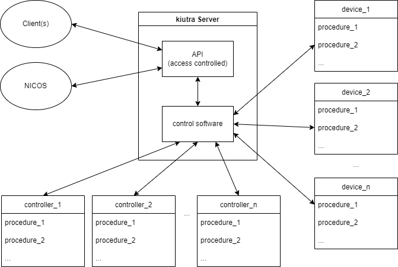

kiutra API#
The kiutra API offers easy access to our cryostat’s control operations. The API is implemented as an RPC-server (remote procedure call). Using a device name (like controller_1) in conjunction with a procedure key (like procedure_1), values can be read, set and procedures executed. Controller objects and relevant hardware components are represented as software instances as illustrated in the image below. Each controller/device implements a set of remote procedures which are accessible over the RPC-server.

Clients communicate via a RPC-Server-based API with the kiutra control software and associated peripherals. Each controller/device implements API-accessible procedures.#
Note
Multiple clients can interact simultaneously with the server.
Using the provided kiutra clients, temperature control tasks, like sweeps, can be implemented in a few lines of code:
# create temperature control client object
temperature_control = TemperatureControl('temperature_control', '192.168.XX.XX')
# start a temperature control with a setpoin of 500 mK/0.5 K and a ramp of 0.15 K/min
temperature_control.start((0.5, 0.15))
# get status code and message
code, message = temperature_control.status
# get actual temperature in K
temp = temperature_control.kelvin
# check whether control process is active
control_active = temperature_control.is_active
# check whether setpoint temperature is reached and stable
temp_stable = temperature_control.is_stable
Note
Certain operations require extended access rights to avoid unintentional changes to the system, which could negatively influence performance.
To temporarily unlock a higher access level for lower level operations, simply call the unlock procedure of the api manager providing password and access level.
# create api manager client object
api_manager = APIManager('192.168.XX.XX')
# unlock admin level access (returns bool indicating success)
success = api_manager.unlock('password', 'admin')
# check access level
level = api_manager.access_level
# lock access
api_manager.lock()
# check access level
level = api_manager.access_level
To get a list of accessible controller and device objects, simply run the following piece of code:
api_manager = APIManager('192.168.XX.XX')
devices = api_manager.api_info
For additional information about a controller or device object, you can run the following command:
api_info_dict = <device_name>.api
This will yield a dictionary containing further dictionaries with information about the respective function or property. For the api_manager it would look something like this:
{'unlock': {'permissions': {'user': 'execute', 'admin': 'execute'},
'signature': '<Signature (hash: str, level: str) -> bool>',
'doc': '\n Unlock admin access.\n\n Args:\n hash: Passphrase hash using werkzeug.security sha1\n level: level like e.-g. \'admin\'\n\n'},
'lock': {'permissions': {'user': 'execute', 'admin': 'execute'},
'signature': '<Signature ()>',
'doc': '\n Immediately locks API access to base level\n\n '},
'access_level': {'permissions': {'user': 'read', 'admin': 'read'},
'input_doc': None,
'output': 'str',
'output_doc': '\n Access level as string.\n return:\n '},
'api_info': {'permissions': {'user': 'read', 'admin': 'read'},
'input_doc': None,
'output_doc': '\n List of available api devices\n\n Returns (list): available api devices as string handles\n\n '},
'status': {'permissions': {'user': 'read', 'admin': 'read'},
'input_doc': None,
'output_doc': '\n Return a tuple of int,string with status information.\n\n Returns (int, str): (DeviceStatus.value, status message)\n\n'}
}
Attention
The above is a preliminary representation and might change.
This package offers a basic, ready to use python client, as well as controller/device specific clients that separately implement all necessary, remote procedure calls. The documentation states each API handle used in the respective method.
We recommend using the jsonrpclib-pelix pypi package. Other implementations might be used, but were not tested.
Controller#
The kiutra API offers access to all main control objets. These controllers are responsible for higher-level procedures like temperature control, gashandling and sample transfers. Below is an overview of available controllers and their device handles:
Interface |
Device(s) |
|---|---|
temperature_control: Full-range continuous temperature control object combining both resistive heating and magnetic cooling/heating. |
|
adr_control, adr_control_1, adr_control_2: ADR control object to control the main ADR system (adr_control) or individual adr units (adr_control_1, adr_control_2). |
|
sample_heater: Control object to control the resistive sample stage heater. |
|
sample_magnet: Control object to control superconducting sample magnet(s). |
|
sample_changer: Control object to control sample transfers. |
|
cryostat/cryostat_control: Control object to execute cryostat-wide operations like cooling down, warming up and purging the system. |
|
utility_control: Control object to execute utility operations in case of manual control like closing or opening valves. |
Devices#
Low-Level Devices
Attention
Admin-level access is required to change low-level device parameter or execute functions.
Note
You can read device metrics without admin-level access.
Low-level devices represent crucial components of the cryostat. To operate the cryostat no interaction with these devices is required. For monitoring, however, device-level metrics can be read by any user.